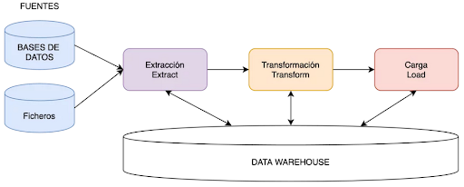
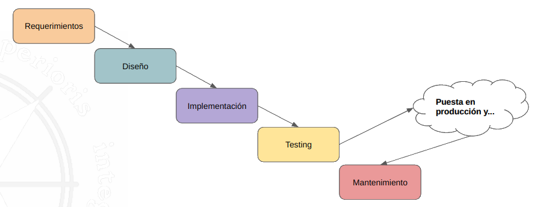
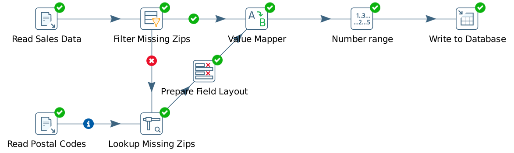

6. ETL
6.1. Introducción
El concepto ETL nace en la década de 1970 cuando las organizaciones comenzaron a utilizar múltiples repositorios de datos, o bases de datos, para almacenar diferentes tipos de información de negocios.
A fines de la década de 1980 y principios de la década de 1990, los data warehouses aparecieron en escena. Siendo un tipo de base de datos diferente, los data warehouses proveían acceso integrado a datos de múltiples sistemas.
Con el tiempo, el número de formatos, fuentes y sistemas de datos ha aumentado enormemente. Las ETL son ahora solo uno de varios métodos que utilizan las organizaciones para recopilar, importar y procesar datos.
Las herramientas ETL (Extract, Transform and Load) son un componente esencial para data warehousing y analítica, se encargan de asegurar la integración de datos entre bases de datos y aplicaciones. Permiten recopilar, transformar y consolidar datos de forma automatizada.
6.1.1. Ventajas
- Ahorran tiempo y esfuerzo en el manejo manual de datos.
- La mayor ventaja del proceso ETL es que ayuda a recopilar, transformar y consolidar datos de forma automatizada. Esto significa un ahorro de tiempo y esfuerzo de importar filas y filas de datos manualmente.
- Facilita el trabajo con datos complejos.
- Gestión de un gran volumen de datos complejos y diversos. Por ejemplo, ventas, clientes, productos, empresas de transporte…
- Normalización, transformación y agregaciones de datos. Un buen diseño de una ETL puede simplificar estos procesos.
- Reduce los riesgos asociados con el error humano
- Nadie está realmente a salvo de cometer errores. Podemos reducir la probabilidad de algunos de ellos como, datos que pueden duplicarse accidentalmente en el sistema de destino o las entradas manuales pueden insertarse incorrectamente.
- Ayuda a mejorar la toma de decisiones
- Al automatizar las prácticas de datos críticos y reducir la posibilidad de errores, la ETL ayuda a garantizar que los datos que recibe para analizar sean de la mejor calidad posible. Y los datos de alta calidad son fundamentales para tomar mejores decisiones corporativas.
- Aumenta el retorno de la inversión (ROI)
- A medida que ahorramos tiempo, esfuerzo y recursos, el proceso ETL en última instancia ayuda a aumentar el ROI. Además, al mejorar la inteligencia empresarial, ayuda a aumentar las ganancias. Una vista de datos consolidados para tomar mejores decisiones comerciales.
6.1.2. Conceptos
Extracción: Ingesta de datos de diferentes fuentes no necesariamente pueden tener la misma tecnología o estructura.
Transformación: Modificación, combinación, enriquecimiento o limpieza de los datos de origen.
(L)Carga: Carga/Escritura de los datos ya tratados en un destino para ser explotados.
6.1.3. Componentes

Las fuentes pueden ser: Ficheros, BBDD, MongoDB, API REST, Logs, CRMs, ERPs, ...
Transformaciones:
- Reformateo de datos
- Conversión de unidades
- Agregación de columnas
- Traducción
- Valores calculados
- ...
Data Warehouse:
- Cloud:
- Amazon Redshift
- Azure Synapse Analytics
- BigQuery
- HDFS
- On premises:
- RDBMS
6.1.4. Diseño
En el diseño de una ETL debemos hacer el análisis de requisitos funcionales y no funcionales de forma similar a como lo hacemos con cualquier aplicación.
- Funcional: Define una función del software.
- No funcional: Requisitos del cliente o arquitectura externos a la funcionalidad del software, por ejemplo, cantidad de usuarios de la aplicación o lenguaje/tecnologías a utilizar, seguridad, auditorías...
Para el desarrollo de la ETL vamos a tener que ser conscientes de los datos a tratar y tomar decisiones en:
- Software a utilizar para desarrollar la aplicación.
- Definición y tecnologías de las fuentes de datos. Diccionario de datos o data profiling.
- Conocimiento de los datos y desarrollar transformaciones para explotarlos.
- Donde vamos a guardar toda la información del proceso, qué tecnologías.
- Como vamos a representar la información que el cliente nos pide.
Implementar una ETL con los requisitos funcionales y no funcionales ya descritos implica pasar por diferentes fases.

6.1.5. Arquitectura
ETL representa los tres pasos básicos de la integración de datos: extraer, transformar y cargar. Sin embargo, esta abreviatura simplista pasa por alto algunas de las partes más importantes del proceso ETL.
Estos tres pasos básicos se pueden ampliar a 6 pasos cruciales que juntos componen la arquitectura ETL.
- Profiling
- Extraction
- Cleansing
- Transformation
- Loading
- Monitoring
6.2. Casos de uso
Dependiendo de cómo recibamos los datos el proceso de ETL puede ser más o menos laborioso, tenemos tres situaciones típicas:
- Solamente con una ingesta: datos limpios, ya estructurados y listos para explotar.
- Ingesta + Carga: datos limpios, ya estructurados y listos para explotar pero queremos separarlos en otra parte del DataWarehouse para mantener una o varias copias de seguridad.
- Ingesta + Transformación + Carga: datos en bruto, estructurados o no estructurados, con baja calidad… Necesitaremos realizar una o más transformaciones para poder explotarlos posteriormente realizando una carga una vez ya estén listos.
Otras acciones que podemos realizar con las herramientas ETL son:
- Ingestar, transformar, cargar y explotar la información.
- Migrar datos entre aplicaciones o aplicaciones en la nube, sin alterar la integridad de los mismos.
- Replicación de datos para conseguir copias de seguridad y para diversos análisis de redundancia.
- Permite que la información sea depositada en una base de datos para guardarlos, clasificarlos y para transformarlos en Inteligencia de Negocios o información de alto valor.
- Sincronización de sistemas clave.
Resumiendo, una ETL es el proceso que permite a las organizaciones:
- Mover datos desde múltiples fuentes.
- Reformatearlos, limpiarlos o añadir información adicional.
- Cargarlos en:
- Otra base de datos
- Datamart
- Datawarehouse
- Datalake
6.3. Profiling
Data Profiling es un paso crucial, aunque a menudo ignorado, en el proceso de ETL. Consiste en examinar sus datos sin procesar y garantizar que sean apropiados para ETL.
Los tres componentes del data profiling son:
- Descubrimiento de estructuras: ¿Cuáles son los valores o rangos de valores aceptables para cada campo en el registro de datos?
-
Descubrimiento de contenido:
- ¿Qué información contiene cada registro de datos y cuál es la calidad de este registro?
- ¿Cómo se representan los datos que faltan (por ejemplo, con valores como NULL, 0 o -1)?
-
Descubrimiento de relaciones:
- ¿Cuáles son las relaciones que existen entre las fuentes de datos dadas y entre registros individuales dentro de una fuente de datos?
- ¿Cómo puede aprovechar estas conexiones durante ETL mientras reduce las ineficiencias (por ejemplo, eliminando datos duplicados del conjunto de datos)?
Código en Python para Data Profiling (Probablemente haya que instalar la librería pandas_profiling con:
pip install sweetviz
Y luego crear un fichero de Python con est código:
import pandas as pd
import sweetviz as sv
# Solicitar al usuario el nombre del archivo
file_path = input("Introduce el nombre del archivo con extensión (.csv o .xls): ")
# Leer datos desde el archivo proporcionado por el usuario
if file_path.endswith('.csv'):
df = pd.read_csv(file_path, encoding='unicode_escape')
elif file_path.endswith('.xls') or file_path.endswith('.xlsx'):
df = pd.read_excel(file_path)
else:
raise ValueError("Formato de archivo no compatible. Utiliza archivos .csv, .xls o .xlsx.")
# Crear el perfil de análisis exploratorio de datos (EDA)
report = sv.analyze(df)
# Generar el informe y guardarlo como archivo HTML
report.show_html('informe_eda.html')
6.4. Extracción
La fase de extracción consiste en la recuperación de información de varios origenes de datos.
Las fuentes de datos pueden ser muy variadas, como bases de datos relacionales o no relacionales, ficheros, aplicaciones SaaS, CRMs, ERPs, APIs, páginas web o sistemas de logs.
Problema: Los datos pueden venir de diferentes proveedores, con diferentes estructuras y con diferentes formatos de origen.
Para poder realizar una correcta extracción de los datos es necesario saber:
- Si los datos son estructurados
- Qué tablas, columnas y tipos de dato por columna vamos a necesitar para ingestar de forma ordenada la información.
- Si los datos no son estructurados.
Esto lo podemos solucionar con herramientas de Profiling y Data dictionary.
Debemos:
- Identificar: tablas, columnas, tipos de datos, tipos de objeto dentro de un modelo dimensional...
- Definir: destino en el que escribir la información, tablas, columnas, tablas de dimensiones y hechos, tipos de datos.
- Detectar la calidad de los datos.
- A veces vamos a necesitar el juicio de gente experta.
Una vez ya conocemos los orígenes, las tecnologías con las que están implementados y los datos a extraer. El siguiente paso es:
- Convertir los datos a un formato preparado para iniciar el proceso de transformación.
- Almacenarlos en nuestro espacio de trabajo.
Este proceso debe ser:
- Un proceso rápido, ligero, causar el menor impacto posible, ser transparente para los operacionales, independiente de las infraestructuras.
- No debe interferir con el funcionamiento de los operacionales, cargar las BBDD, perder datos por el camino, modificar información.
6.5. Transformación
La fase de transformación de ETL es donde se produce la operación más crítica. El resultado de la transformación pasa por aplicar una serie de funciones o reglas de negocio sobre los datos extraídos para convertirlos en datos que, a continuación, serán cargados en la nueva fuente.
Modificar los datos en bruto para que presenten los formatos de uso correctos, convertir los datos no estructurados en un formato estructurado y realizar cálculos como agregaciones de datos.
La transformación se efectúa mediante una serie de normas. Estos son algunos de los estándares que garantizan la calidad de datos y su accesibilidad durante esta fase:
- Normalización: definir qué datos entrarán en juego, cómo se formatearán y almacenarán, y otras consideraciones básicas que definirán las etapas sucesivas.
- Eliminación de duplicados: excluir y/o eliminar los datos redundantes.
- Verificación: ejecutar comprobaciones automatizadas para cotejar información similar, como tiempos de transacción o registros de acceso.
- Clasificación: maximizar la eficiencia de los almacenes de datos agrupando y clasificando los datos en bruto en categorías.
Un proceso de transformación...
- Debe transformar los datos para mejorarlos, incrementar su calidad, integrarlos con otros sistemas, normalizarlos, eliminar duplicidades o ambigüedades.
- No debe crear información, duplicar, eliminar información relevante, ser erróneo o impredecible.
Podemos agrupar las transformaciones en:
- Mapeo de datos
- Limpieza de datos
- Otras transformaciones
6.5.1. Mapeo de datos
El mapeo de datos es el proceso por el que se establecen correspondencias entre campos de una base de datos a otra. Es el primer paso para facilitar la migración, integración y otras tareas de gestión de datos.
¿Cuándo se puede realizar un mapeo?
- Si disponemos de datos limpios y estructurados generamos la ingesta y trabajamos sobre ellos.
- Después de una o varias transformaciones.
Las tareas de mapeo de origen a destino varían en complejidad. El nivel de complejidad depende de la jerarquía de datos y la disparidad entre la estructura de datos de origen y destino.
Usos de un mapeo de datos:
- Migración de datos: es el proceso en que trasladamos los datos de un sistema a otro de forma puntual.
- Integración de datos: proceso continuo por el que se trasladan datos periódicamente de un sistema a otro.
- Durante una transformación de datos: por ejemplo, podemos realizar una operación de transformación de “Illinois” a “IL” y mapearlo a otro campo destino.
6.5.2. Limpieza de datos
Los datos que recibimos de los diferentes orígenes pueden contener errores, como información faltante, registros duplicados o datos incorrectos. La limpieza de datos ayuda a identificar errores en un conjunto de datos y los corrige para garantizar que solo se transfieran datos precisos a los sistemas de destino.
Para realizar esta tarea, vamos a tener que:
- Realizar un análisis de los datos.
- Aplicar reglas de unificación de datos.
- Validaciones de completitud.
- Estandarización de datos.
La limpieza de datos es importante para:
- Asegurar la calidad de los datos que vamos a procesar.
- Evitar la información no veraz o errónea.
- Ahorrar costes de espacio en disco al eliminarse la información duplicada.
- Agilizar las consultas por la ausencia de datos repetidos o inservibles.
- Ayudar a tomar decisiones estratégicas correctas.
Una mala limpieza de datos puede producir:
- Procesos que requieren mucho tiempo.
- Costes adicionales.
- Trabajo adicional requerido para corregir los errores.
- Menor eficiencia.
- Mala toma de decisiones.
- Mala productividad.
Ejemplo: Tenemos la columna “Estado” en dos sistemas fuente, uno escribe el nombre del estado tal cual, Illinois como «Illinois», pero el otro sistema tiene la información escrita con la abreviatura «IL».
Una vez hagamos una ingesta de las dos fuentes, ¿qué podemos hacer para poder explotar la información?
6.5.3. Otras transformaciones
Todas las tareas de transformaciones se configuran para que se ejecuten automáticamente en la secuencia que se defina. Además de las que acabamos de ver, podemos añadir:
- Cambios de codificación.
- Cruzar diferentes fuentes de datos para obtener una fuente diferente.
- Agregar información en función de alguna variable.
- Tomar parte de los datos para cargarlos.
- Transformar información para generar códigos, claves, identificadores.
- Estructurar mejor la información.
- Generar indicadores que faciliten el procesamiento y entendimiento.
- ...
Estas son algunas de las acciones más comunes que podemos hacer para conseguir las tareas que hemos descrito:
- Reformateo de datos.
- Conversión de unidades.
- Selección de columnas para su carga posterior.
- Agregación de columnas.
- Eliminación de campos innecesarios de los registros.
- Dividir una columna en varias.
- Obtener nuevos valores calculados.
- Unir datos de varias fuentes.
- Lookups.
- Pivoting.
6.6. Carga
La última fase de un proceso de ETL es la carga de esos datos extraídos y transformados a su nuevo destino. Existen tres vías habituales de cargar los datos a un almacén de datos: la carga completa, la carga incremental y la actualización completa. - Carga completa: Todos los datos se mueven al almacén al mismo tiempo. - Carga incremental: El movimiento de datos se produce en lotes. - Actualización completa: Se eliminan por completo los datos de una tabla o una BD y luego se vuelven a cargar. Básicamente movemos los datos de una zona de staging a otra BD o a un Data Warehouse o a un Datamart, a un fichero...
6.7. Verificación y gestión de errores
Durante todos los procesos de la ETL se recomienda ir realizando comprobaciones sobre el paso anterior, por ejemplo:
- Sobre los datos en bruto verificar después de la limpieza de datos que no existen duplicados.
- Sobre una transformación o un mapeo verificar que el número de registros sigue siendo el mismo antes y después de la transformación.
- Sobre una generación de id o información agrupada verificar que no estamos perdiendo información o tenemos campos a null.
Si una ejecución de la ETL o un proceso falla…
- Logar o insertar en BD los pasos que realizamos a modo de auditoría. Añadir temporalidad.
- Si los datos se guardan en particiones, borrar la partición insertada y volver a ejecutar la ETL.
- Si es una actualización completa o una carga completa no tendremos mayor problema que volver a ejecutarlo.
- ...
El desarrollo de una ETL puede que no se acabe una vez implementada según los requisitos iniciales, siempre estará expuesta a posibles nuevos desarrollos que el cliente quiera que se implementen para poder explotar otra información o explotarla de otra forma. Las ETL requieren de una vigilancia en cada ejecución para verificar que durante todos los procesos no han ocurrido fallos, como por ejemplo: fallos de conexiones, caída de hosts, errores en transformaciones, bugs…

6.8. Características de las ETL
- Tipos de carga o ejecución. Pueden ser diarias, semanales, mensuales, anuales… y se diferencian en:
- Incremental: añade información adicional sin modificar la existente.
- Total: borra y añade la información en su totalidad.
- Actualización completa: borrar y reinsertar.
- Permiten conectividad con diferentes sistemas y tipos de datos. Integración.
- Excel, BBDD Transaccionales, XML, Access, Teradata, HDFS, Hive, CRM
- APIs de Aplicaciones de terceros, Logs…
- Capacidad para transformar los datos
- Transformaciones Simples: tipos de datos, cadenas, codificaciones, cálculos simples
- Transformaciones Intermedias: agregaciones, lookups,
- Transformaciones Complejas: algoritmos de IA, Segmentación, Integración de código de terceros, Integración con otros lenguajes
- Metadatos y gestión de errores
- Permiten tener información del funcionamiento de todo el proceso
- Permiten el control de errores y establecer políticas al respecto
- Permiten la planificación y ejecución de lógica
- Capacidades de entrega de datos. Proporcionar datos a otras aplicaciones, procesos o bases de datos en varias formas:
- Planificación por Batch
- Planificación por eventos
- Planificación en tiempo real
- Otras características:
- Un aumento en la velocidad de desarrollo del proceso.
- La descentralización del control de la ejecución y de todos los procesos.
- Una mayor agilidad en el negocio.
6.9. Herramientas


6.10. Pentaho Data Integration
La herramienta Pentaho Data Integration (PDI o también llamada Spoon) permite crear dos tipos de archivos básicos: transformaciones y trabajos.
- Las transformaciones describen los flujos de datos para ETL, como la lectura de un origen, la transformación de datos y la carga en una ubicación de destino.
- Los trabajos coordinan las actividades de ETL, como definir el flujo y las dependencias para las transformaciones de órdenes que deben ejecutarse.
Descarga: Pentaho Data Integration

Comandos en línea de Pentaho Data Integration
- Pan: Herramienta en línea de comandos para ejecutar Transformaciones.
- Kitchen: Herramienta en línea de comandos para ejecutar Jobs.
Documentación: Use Command Line Tools to Run Transformations and Jobs